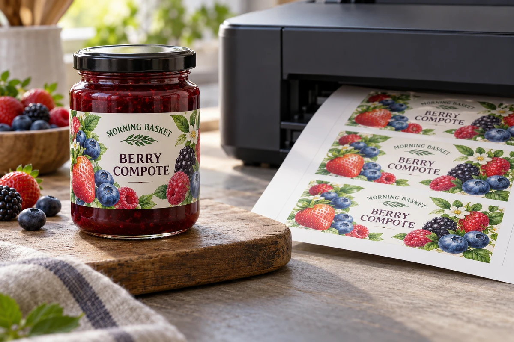
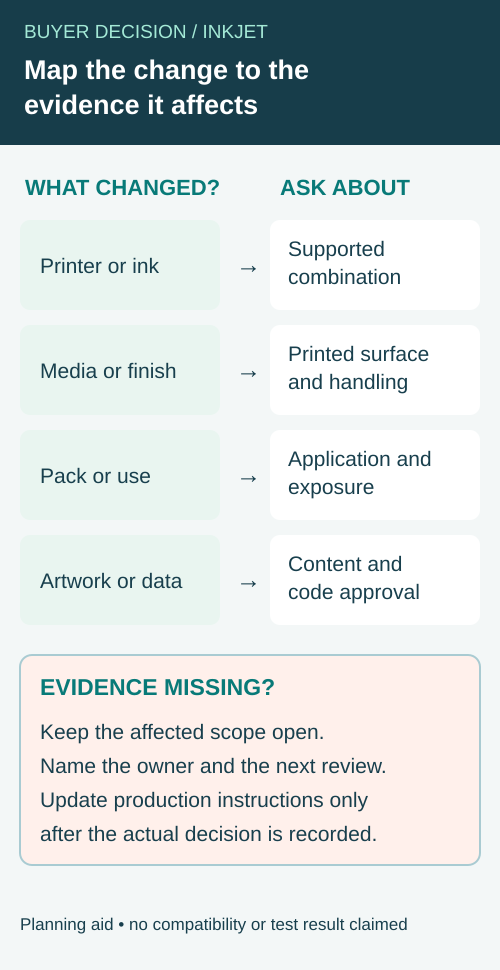

A jar label looks sharp when it leaves the desktop printer. After refrigeration and wiping, the printed surface behaves differently. Buying a sheet advertised as waterproof did not answer whether the chosen printer, ink, coating and handling sequence worked together.
Qualify the complete printing workflow before using it for saleable packaging. Identify the printer and ink, the exact label media, settings and any finishing operation, then test the printed and applied sample under the intended conditions. A material description alone cannot approve the finished result.

Name the actual printing system
Record the printer model, ink references and media product. Ask the equipment and media suppliers to confirm compatibility for the proposed combination. Desktop inkjet, dedicated color-label inkjet and toner workflows have different requirements; do not treat a sheet that feeds successfully as proof of suitable output.
Use the supplier's supported settings as a starting point. If the operator changes media mode, print quality or another relevant setting, retain the configuration in the trial record. Otherwise, a later batch may not reproduce the sample that was approved.
The in-house-versus-outsourced guide compares who performs the work. This article addresses the release evidence needed when the business chooses to print with inkjet equipment.
Separate media resistance from printed-surface resistance
A film face stock can resist water while the printed surface still needs a compatible ink-receptive coating and print process. Adhesion to the container is another question. Keep these properties distinct when reviewing a supplier description.
Epson's label-media information identifies media choices for particular ColorWorks equipment. Product-specific durability claims should be read within their stated printer, ink and media scope. They do not establish that an arbitrary office inkjet and generic film produce the same result.
Do not add a chemical-label certification or water-resistance claim to food packaging merely because a different printer/media combination carries it. Ask what evidence applies to the actual printed construction and intended use.
Build a workflow qualification record
| Element | Record for the approved sample |
|---|---|
| Equipment | Printer model and relevant configuration |
| Ink | Identified ink system and replacement policy |
| Media | Face, adhesive, liner and supplier reference |
| File | Artwork revision, dimensions and color setup |
| Output | Settings, print date and relevant drying/handling instruction |
| Finishing | Any coating, laminate or cutting operation |
| Package | Actual surface and application condition |
| Exposure | Chilling, condensation, wiping or other intended sequence |
| Decision | Criteria, observations, approver and limits |
This is an editorial workflow record. The suppliers and responsible quality owner should determine applicable instructions and test methods; the table does not create a universal printing recipe.
Use a sample that reaches the real exposure
Print the approved file on the proposed media and apply it to the actual package. Follow the applicable supplier instructions before handling or testing. Do not invent a standard drying time that covers every ink and coating.
Run the sequence the pack will actually experience. A chilled jar may develop condensation after it leaves storage. An oily condiment may expose the label to repeated wiping. Record which sequence was completed and which remains untested.
The wet-use sample guide helps define the inspection before the sample is judged. Avoid a casual splash test followed by a broad waterproof claim. Describe the actual observation and its scope.
Inspect information as well as appearance
Look at the text, variable fields and any machine-readable symbol using the appropriate method. Smearing, loss of contrast or movement at a small field may matter more than a slight change in a decorative background. Assign the approval criteria according to the actual label requirements.
Do not treat a successful phone scan as complete barcode verification. If the job requires verification, arrange the applicable process on a representative printed and applied sample. File-level data checks and physical-symbol checks answer different questions.
If the label carries mandatory food information, the responsible business must also approve the content and applicable layout requirements. A durable inkjet print does not establish that the wording is correct.
Control repeat printing and substitutions
Keep the approved settings accessible to the people who print the next batch. Review changes in ink, media, printer, firmware configuration or finishing where they affect the evidence. A replacement media pack described as similar should not silently inherit the previous approval.
The thermal workflow guide discusses another printing route and backup qualification. Use the same discipline of identifying the actual system, without transferring thermal-specific findings to inkjet output.
Retain a suitable reference and record the production batch. If a later print behaves differently, compare the configuration and materials before declaring that all inkjet labels are unsuitable or that a stronger adhesive will fix the printed surface.
Decide which approval needs review after a print-workflow change
An approved inkjet label is a record of a particular combination and an agreed use. When an ink, printer, media or finishing step changes, the next decision is which evidence still represents the proposed output. Do not automatically reject every change, and do not automatically accept a substitute because the package description sounds familiar.


Use a change-impact record with the supplier, printer owner and person responsible for the finished label. Identify the previous baseline, the proposed replacement and the actual reason for the change. Preserve a sample and production record where the existing process requires them. The table below is an editorial coordination aid, not a universal validation protocol or a list of guaranteed compatible materials.
| Changed element | Baseline and proposed change to identify | Evidence question for the responsible owner |
|---|---|---|
| Printer or configuration | Model and controlled media/print settings | Does the previous printed sample represent this output route? |
| Ink supply | Exact approved and proposed ink references | Do the applicable printer and media instructions support the combination? |
| Label media | Face, coating, adhesive and liner references | Is the print surface and container-contact construction represented? |
| Finishing | Existing and proposed laminate, coating or cut step | Does the final printed surface match the sample and intended use? |
| Package or handling | Actual container, application and exposure sequence | Does existing evidence cover the changed contact or later handling? |
| Artwork or data | Approved content, version, code field and file | Which content and physical-output approvals must be reconsidered? |
Separate the change description from the approval
For an illustrative jam-label workflow, a business might propose a media replacement while keeping its printer and artwork. Record the two exact media references and ask what changed in the face, coating, adhesive or liner. A name such as “waterproof white film” is not enough to establish that the new printed and applied label is represented by the old sample. The proposed media might be suitable, but the responsible suppliers and quality owner must decide which evidence is required.
If the only change is a new artwork file, content, color, placement and barcode coverage can be affected even when the materials stay the same. The data owner should confirm the actual content; a printer supplier's material statement cannot approve the product information. The barcode verification guide distinguishes data checks from physical symbol-quality evidence.
Compare only what the new sample actually demonstrates
Record the actual printer, ink, media, settings, finishing and package represented by a replacement sample. If the sample was hand-applied but production uses a different method, keep that difference open. If it was inspected dry but the intended use includes refrigeration and wiping, a dry appearance observation does not cover the whole route. Ask the responsible parties to agree which checks and acceptance rules are relevant; do not manufacture a standard drying interval or a universal pass threshold.
If evidence is incomplete, the owner may hold the affected scope, seek more information or define a limited evaluation if the operation permits it. Keep unrelated approved work separate only when its independence has been confirmed. A smaller trial can reduce stock commitment, but it still consumes time and may not represent the later production run. Record what remains open and who can authorize the next step.
When a change is accepted, update the accessible production instruction, retain the superseded baseline as history and identify the new approved combination. The thermal-transfer overprint guide handles a different ribbon-and-finish interface; do not transfer its specific conclusions to inkjet media. For a label inquiry, supply the printer and ink references, current and proposed media, package, intended use and the exact evidence gap.
Compare the operational alternatives
An in-house process can offer flexibility while requiring operator time, consumables, maintenance and release controls. Outsourced printed labels can shift some work while introducing order quantities and stock commitments. Ask for actual costs and supply options rather than choose from a universal claim that one route is cheaper.
A hypothetical compote launch may use a defined inkjet workflow for a limited dry-use sample while qualifying another construction for chilled retail handling. Record the boundary so presentation approval does not become a claim for the final route.
Discuss an inkjet-label construction with your printer and ink references, proposed media, package surface, artwork and intended wet-handling sequence. Ask which conditions can be supported and which need a trial. The form opens an email draft; review it and attach relevant files through email or the listed WhatsApp channel.